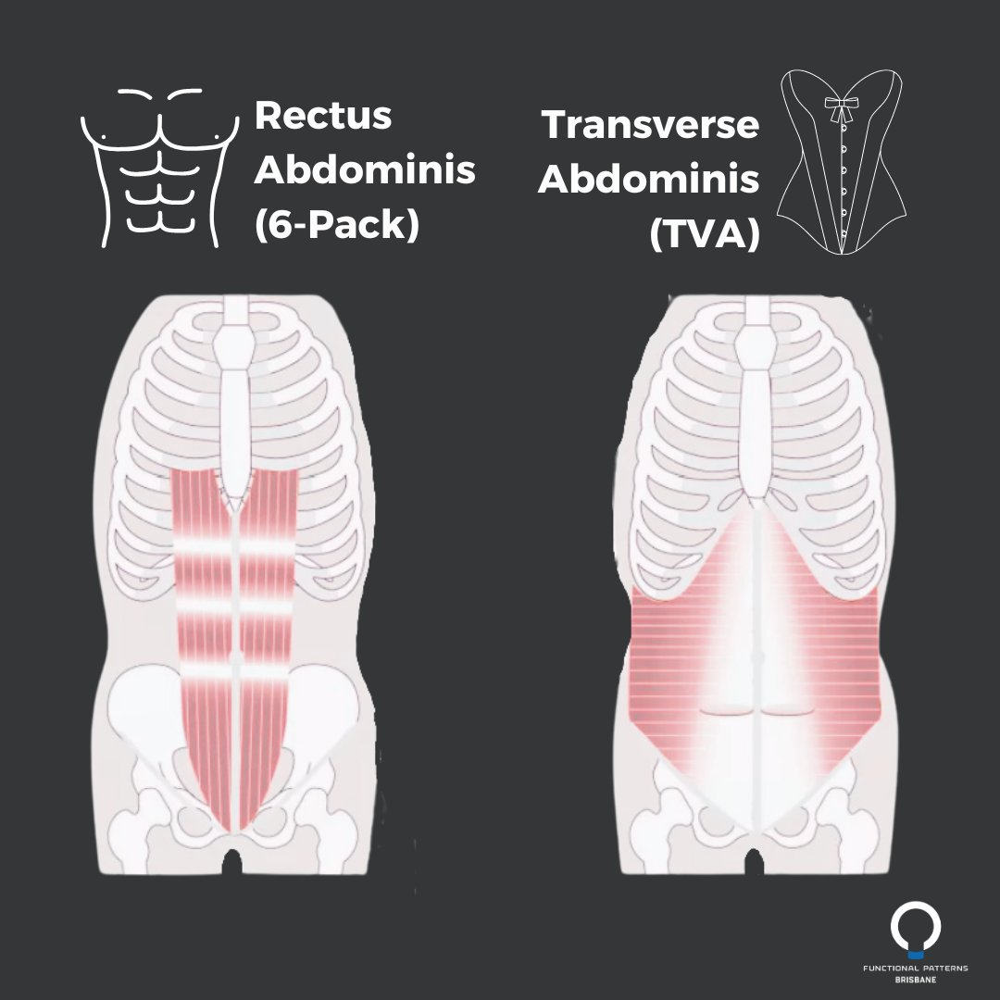

Transverse Ab Muscles: Why They Matter More Than Your Six-Pack
The transverse ab muscles (TVA) are often misunderstood and overlooked, yet they are the deepest and most important muscles in your core. While most people train the superficial abs for aesthetic purposes, the TVA functions like a natural corset, wrapping around the midsection to stabilise your spine and maintain healthy intra-abdominal pressure. When these deeper muscles are weak or inactive, the body compensates by overusing the superficial abs and lower-back musculature—leading to chronic tightness, poor posture, and increased risk of injury.
At Functional Patterns Brisbane, we consistently see chronic pain cases rooted in weak or dysfunctional transverse ab muscles. Without proper TVA engagement, the ribcage collapses, the pelvis tilts forward, and the lumbar spine becomes overloaded. This creates the perfect environment for disc compression, lower-back pain, and compensatory movement patterns. By teaching clients how to activate and strengthen the TVA using breathing mechanics, gait-based sequencing, and targeted corrective exercises, we restore stability to the spine and help the body move as an integrated system—not just a collection of isolated muscles.
If you're unsure whether your transverse ab muscles are activating properly, you can book a posture assessment to identify how your ribcage, pelvis, and core are influencing your movement patterns.
The Superficial Abs (Rectus Abdominis):
Let's start by getting acquainted with the well-known six-pack muscles, the Rectus Abdominis. These are the muscles that create the sculpted look many people desire. The Rectus Abdominis runs vertically down the front of your abdomen and is responsible for flexing the spine, like when you do crunches or sit-ups. They provide that aesthetic appeal but are only one piece of the core puzzle.
Function:
-
Aesthetics: The Rectus Abdominis muscles are the showstoppers, providing the coveted six-pack appearance.
-
Flexion: These muscles help flex the spine forward, facilitating movements like crunches.
Importance: While the Rectus Abdominis adds to your visual appeal, it's essential to remember that aesthetics alone don't necessarily equate to core strength and functionality. This is where the Transverse Abdominis comes into play.

The Transverse Abdominis (TVA):
Often referred to as the "corset muscle," the Transverse Abdominis is a deep-lying muscle that wraps horizontally around your abdomen. Unlike the Rectus Abdominis, the TVA isn't visible from the outside, but its role in core stability is paramount.
Function:
-
Core Stability: The TVA acts like a natural weight belt, providing stability to your spine and pelvis.
-
Internal Abdominal Pressure: It plays a crucial role in maintaining intra-abdominal pressure (IAP), which supports your spine and protects against injury.
-
Posture: The TVA helps maintain proper posture and spinal alignment.
Importance: Understanding the importance of the TVA is vital for overall health and fitness. A strong TVA is the foundation for a stable core, which in turn supports various activities, from lifting heavy objects to maintaining good posture.
Why It's Crucial to Know the Difference:
-
Functional Core Strength: While the superficial abs contribute to core strength, it's the TVA that truly provides functional core stability. Knowing how to engage and strengthen your TVA can improve your athletic performance and reduce the risk of injury.
-
Injury Prevention: A well-conditioned TVA can help prevent lower back pain and injuries by providing essential support to your spine. It acts as a natural brace during movements that involve lifting and twisting.
-
Posture and Alignment: The TVA plays a significant role in maintaining proper posture and spinal alignment. Neglecting this muscle can lead to postural issues and chronic pain.
-
Enhanced Athletic Performance: Athletes of all levels can benefit from a strong TVA. It improves balance, power generation, and stability, making it a valuable asset in various sports and physical activities.
-
Holistic Core Development: While having a defined six-pack is a desirable goal, it should be part of a holistic approach to core development that includes strengthening the TVA. This approach ensures both aesthetics and functional strength.
Conclusion: Understanding the difference between the Transverse Abdominis (TVA) and the superficial abs (Rectus Abdominis) is crucial for a comprehensive approach to core fitness. While the six-pack may be the eye-catching component, the TVA is the unsung hero, providing core stability, injury prevention, and improved overall health. So, whether you're an athlete or someone looking to improve their fitness, make sure to include TVA-specific exercises in your core training routine for a well-rounded and resilient core.
Add a section on why TVA often gets overlooked and why it is extremely important for chronic pain prevention. Also talk about 'vacuums' and how they can be used to strengthen the TVA. talk about the TVA like a corset
ChatGPT
Why the TVA Often Gets Overlooked:
Understanding the Transverse Abdominis (TVA) and its importance is often overlooked for several reasons:
-
Invisibility: The TVA is not visible from the outside, making it less glamorous than the superficial abs. It doesn't contribute to the coveted six-pack appearance, which tends to be the primary focus for many fitness enthusiasts.
-
Lack of Awareness: Many people are simply unaware of the TVA and its role in core stability. The emphasis is often placed on the visible muscles, leaving the deeper core muscles in the shadows.
-
Misconceptions: There is a misconception that a strong Rectus Abdominis alone is sufficient for a strong core. This overlooks the critical role of the TVA in providing core stability and preventing injury.
The Importance of TVA for Chronic Pain Prevention:
The Transverse Abdominis is a critical player in preventing chronic pain, especially in the lower back and pelvis. Here's why it's essential for chronic pain prevention:
-
Spinal Support: The TVA acts like a corset, wrapping around your midsection to support your spine. It stabilizes the lumbar vertebrae, reducing the risk of lower back pain and injuries.
-
Intra-Abdominal Pressure (IAP): The TVA plays a key role in maintaining IAP, which is crucial for spine protection. Adequate IAP supports the intervertebral discs, preventing degeneration and associated pain.
-
Posture Maintenance: A strong TVA helps maintain proper posture by supporting the spine's natural curves. It counteracts the tendency for excessive lumbar lordosis (swayback) and reduces the risk of kyphosis (hunchback).
Vacuum Exercises: Strengthening the TVA Like a Corset:
To target and strengthen the TVA effectively, you can incorporate vacuum exercises into your routine. These exercises are aptly named because they mimic the action of tightening a corset:
-
Vacuum Exercise Technique:
-
Begin in a standing or kneeling position.
-
Take a deep breath in, and as you exhale, draw your navel towards your spine.
-
Imagine pulling your abdominal muscles inward and upward, as if you're trying to touch your spine with your belly button.
-
Hold this contraction for a few seconds while continuing to breathe shallowly.
-
Release and repeat for several reps.
-
Progression:
-
As you get more comfortable with the exercise, try performing it while lying on your back or in a plank position.
-
Gradually increase the duration and intensity of the contraction over time.
Vacuum exercises are incredibly effective for targeting the TVA because they isolate this muscle, unlike traditional ab exercises that often engage the superficial abs more prominently. By incorporating vacuum exercises into your routine, you'll strengthen your TVA, create a more stable core, and reduce the risk of chronic pain.
Conclusion:
The Transverse Abdominis (TVA) may not be as visually striking as the superficial abs, but it plays a crucial role in core stability, chronic pain prevention, and overall health. Like a corset, the TVA wraps around your midsection, providing support and protection to your spine. Don't overlook its significance in your fitness journey. Incorporate vacuum exercises and focus on strengthening your TVA to build a strong, resilient core that supports a pain-free and active lifestyle.